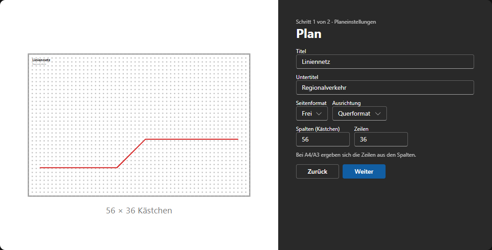
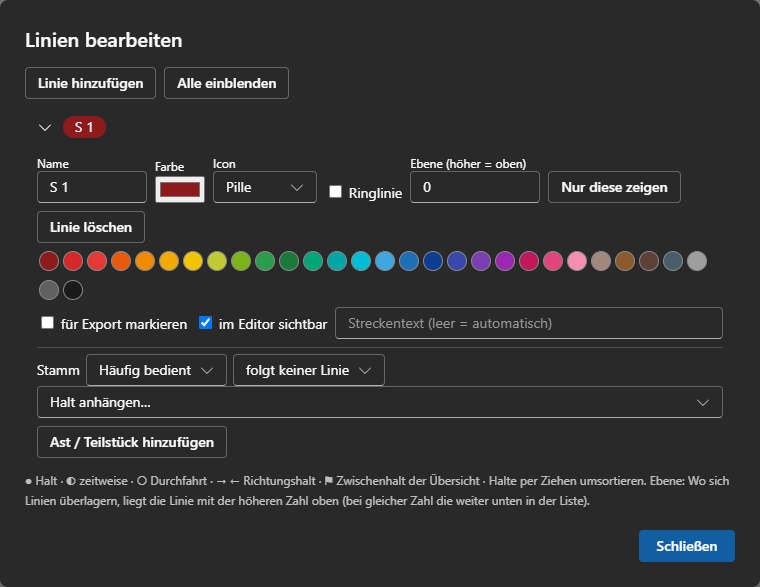
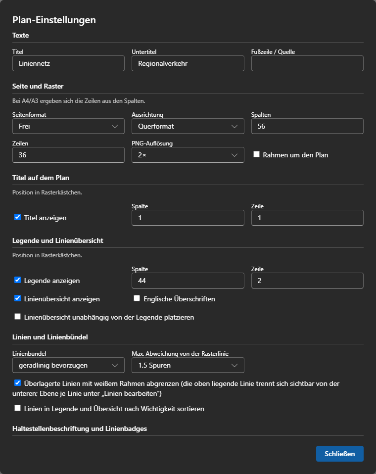
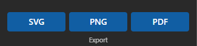

Your first transit map in 10 minutes
This is how a map comes together in Liniennetz-Editor, from an empty project to the export. You describe the network and place the stops; the program does the rest.
Create a project
Open the editor and choose New project. In the first step of the wizard you set the title, subtitle and page format (A4, A3 or free, landscape or portrait) as well as the number of columns. For A4 and A3 the rows follow from the columns.
Want to see a finished plan first? On the Start tab, Sample network loads a small demo network.

Choose a design
In the second step you pick the size of the stop symbol, the thickness of the two line categories (“Frequent service” and “Infrequent service”) and the font. You can change everything later on the Design tab. Finish takes you to the plan.

Create stops
Switch to the Network tab and open Stops…. Enter a name and click Stop. Repeat for every stop. Waypoint creates an invisible helper point that guides a line around a corner without a stop.
For large networks, use the CSV import (Network tab › CSV… › Import). The header row must be
Name;Column;Row.
Place stops on the grid
Pick a stop in the Select to place field (stops not yet placed are marked) and click the spot on the plan. The stop snaps to the grid. Drag placed stops to move them.
The spacing between stops on the grid is your main control: it decides how the editor routes lines.

Create a line and assign stops
Open Edit lines… and click Add line. Give it a name and colour and choose the icon (pill or rectangle). Append stops with Append stop… in travel order and drag to reorder. As soon as two consecutive stops are placed, the editor draws the connection using 0°, 45° and 90° segments with rounded bends.

Branches, loop lines and stop types
Add branch / section adds forks or sections with different service. Each section has its own category, for example “Infrequent service” as a dashed line. The Loop line checkbox joins the last stop to the first. At each stop you switch between stopping, temporary service and pass-through (● ◐ ○) and, if needed, set a direction-only stop (→ ←).
Fine-tune the routing
When several lines share a route, the editor bundles them side by side automatically. Clicking a connection opens a small menu: diagonal or right-angle routing, flip the bend, change the lane order within the bundle, add line badges to the section.

Label and check
For each stop you choose which of the eight sides carries the name (N, NE, E …). Automatic labels on the Network tab does this for all stops and avoids overlaps. Break long names with the Enter key. Finally, Check… lists stops without a line, unplaced stops, duplicate positions and overlapping labels.
Title, key and line overview
On the Plan tab open Plan settings…. Show the title, key and line overview there and position them in grid squares. The key is generated from your categories and stop symbols. Rivers, borders and areas are drawn on the Draw tab.

Save and export
On the Start tab, Save stores your project as a JSON file. In Chrome, Edge and Opera the editor then keeps writing to the same file automatically. Export the finished plan as SVG (editable), PNG (resolution under plan settings) or PDF. For PDF the browser’s print dialog opens: choose “Save as PDF”, and allow pop-ups first. The file name matches your plan’s title.

What next?
You now have a complete plan. Next, look at text styles and designs on the Design tab, split stops and line badges at terminal stops. Tips for a good result are in the design guide, answers to common questions in the FAQ. Coming from Microsoft Publisher? The Publisher alternative page helps you switch.